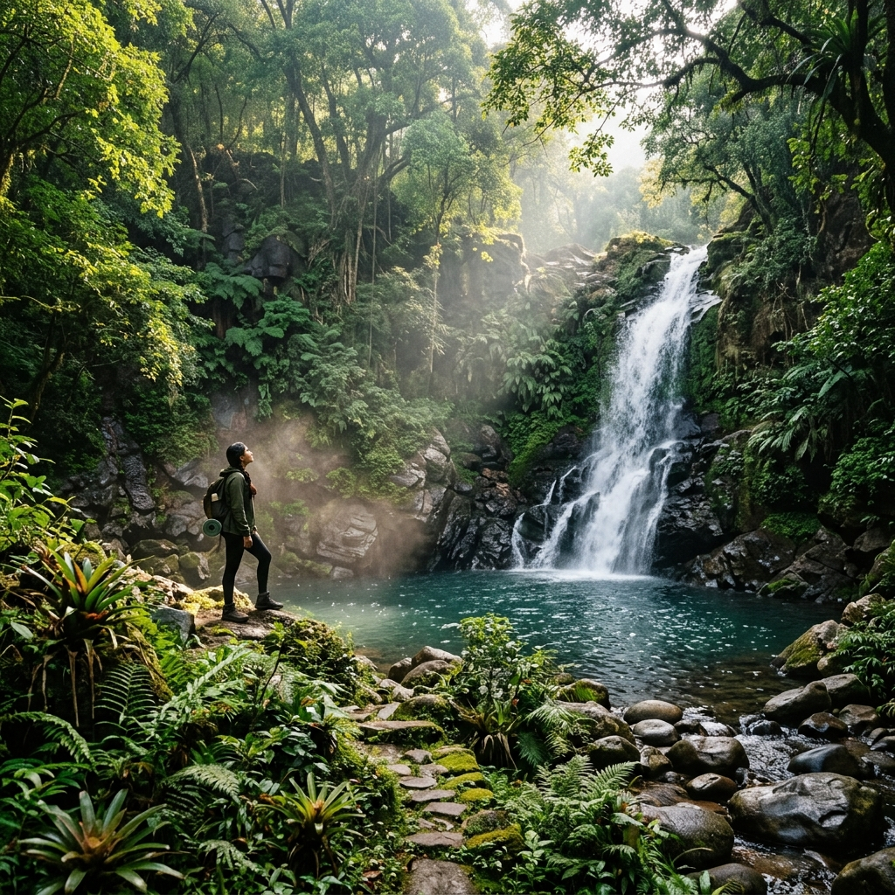

Mandvi Ancient Port Explorer
Step onto the banks of the Rukmavati River, where the 400-year-old tradition of handcrafting wooden cargo vessels lives on. Explore the stories of Kutch's brave mariners who mapped trading routes across the Arabian Sea.
A Gateway on the edge of the desert
Founded as a fortified port town in 1574 by Rao Khengarji I, the first Jadeja ruler of Kutch, Mandvi emerged as an essential maritime trade gateway. Surrounded by the great salt marsh of the Rann of Kutch to the north and east, the rulers of Kutch looked to the Arabian Sea to connect their kingdom to the wealth of the outer world.
At its peak in the 18th century, Mandvi boasted a fleet of hundreds of merchant ships and was protected by massive stone fort walls. Rulers like Rao Godji II championed maritime independence, maintaining a sovereign naval shipyard that rivaled European merchant companies in trade capacity and ship quality.
👑 Rao Khengarji's vision
- Est. 1574: Founded at the mouth of the Rukmavati River.
- Kutchi Sovereignty: Developed independently of the Mughal Empire and European cartels.
- Merchant Haven: Provided protection, tax incentives, and naval escort ships to mariners, drawing elite merchant families.
400 years of Handcrafted Shipwrights
Mandvi remains one of the world's last active traditional wooden shipbuilding centers, where dhow cargo ships are built entirely by hand.
No Written Blueprints
Master builders (Mistrys) design these ships entirely using oral tradition, wooden scale rules, and mental geometry passed down through generations.
Teak & Sal Woods
Hulls are built from imported Malaysian Sal and teak timber, fastened together using high-strength steel spikes and caulked with coconut fiber and oil.
The Kotia Dhow
The signature double-ended cargo vessel of Kutch, ranging from 100 to 1,000 tons in capacity, built specifically to navigate the Arabian Sea currents.
🗺️ Indian Ocean Trade Routes
- East Africa (Zanzibar, Mombasa): Kutchi merchants traded grains and cotton for valuable ivory, cloves, and timber.
- Persian Gulf (Muscat, Aden): Exchanged Indian spices and textiles for dates, pearls, and frankincense.
- Cosmopolitan Culture: Kutchi diaspora communities established prominent trading houses across East Africa and Oman.
Connecting India to Zanzibar and Muscat
Mandvi's unique geography facilitated deep-sea navigation. Powered by monsoon winds, Kutchi sailors set sail in winter toward Muscat, Aden, and Zanzibar, and returned during the summer winds.
Kutchi Bhatias and Muslim traders managed complex mercantile operations, establishing permanent settlements in Zanzibar and Muscat. They acted as financiers, customs collectors, and trade brokers, cementing Kutch's status as a major economic powerhouse in the Indian Ocean world.
Chronology of Kutch Maritime Might
From a small fortified port town to a legendary wooden shipbuilding hub.
Founding by Rao Khengarji I
Mandvi Port is officially established at the mouth of the Rukmavati River, giving Kutch a direct oceanic outlet.
The Golden Age of Godji II
Rao Godji II builds Kutch's state fleet, including the legendary armed merchant ship 'Fateh Mari', establishing naval dominance.
Steamships & Bombay's Rise
The introduction of metal steamships and the development of Bombay Port shifts international shipping, reducing Mandvi's trade volume.
Living Shipbuilding Legend
Local craftsmen continue to hand-assemble massive wooden cargo ships on the shores of Mandvi, preserving centuries of heritage.
The Shipyards of Rukmavati
Take a virtual look at the craft, tools, and vessels that define the shores of Mandvi.



📚 References & Further Reading
- Campbell, James M. (1880). Gazetteer of the Bombay Presidency: Cutch, Palanpur, and Mahi Kantha. Government Central Press.
- Burnes, James (1839). A Narrative of a Visit to the Court of Sinde; and a Sketch of the History of Cutch. John Stark Publishers.
- Archives of the Kutch Museum. Historical records of the maritime trade registries and shipwright logs (Bhuj, Gujarat).
- Sheriff, Abdul (1987). Slaves, Spices and Ivory in Zanzibar: Integration of an East African Commercial Empire into the World Economy. James Currey.